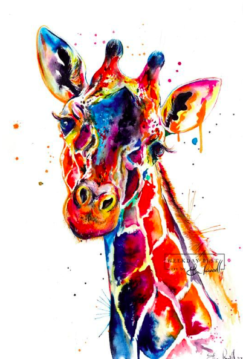

|
|
|

|
Giraff Life Cycle
A female giraffe normally gives birth to one calf at a time.
After a calf is born, it stays close to its mother. A giraffe is one of
the few animals that are born with horns. Most other hoofed mammals with
horns grow their horns when they are older. A calf grows very quickly. In
its first year, it can grow 1 inch a week. By its first birthday, the calf
may be about 10 feet tall!
to know more about Giraff
Click Here
|
|
|

|
Famous April Giraff
17 Years old
Joined Animal Adventure August 2015
Standing Approx 15′
Produced 5 Calves
Heart Shape Patches in Pattern
Resides in Giraffe Barn 2 with both sons, Taj & Azizi
Enjoys: Carrots, Enrichment, & Retirement
to know more about April Giraff
Click Here
|
|
|

|
Facts About Giraff Tounge
- The average length of a giraffe's tongue is 20 inches. And they can grab things with it.
- Their tongues are black in color to prevent them from getting sunburnt. They actually stick their tongues out that much.
- Giraffes sleep a maximum of two hours a day, and usually for under 10 minutes at a time.
- Giraffes have been recorded KICKING LIONS.
- They are the only animals born with their horns, which are actually called ossicones.
- Their blood pressure is twice that of humans.
|